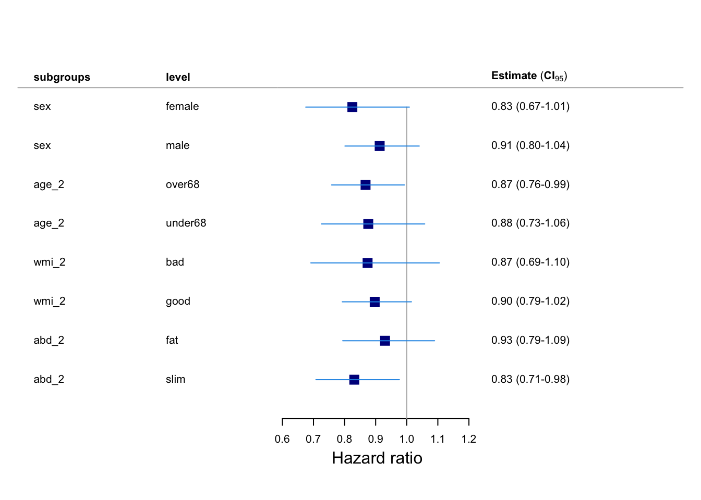
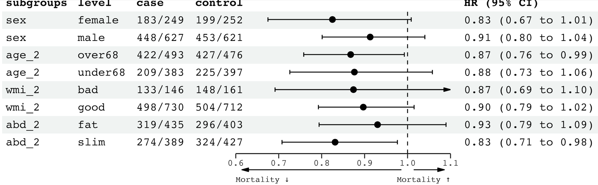
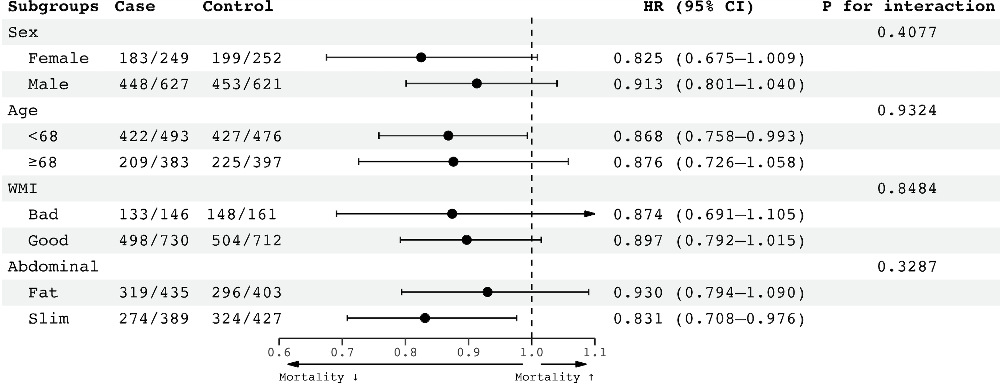

require(Publish)
require(survival)
require(data.table)
data(traceR)인트로
Subgroup analysis이란 치료군-대조군 연구에서 특정 약물의 사용에 따른 임상적 결과 (질병의 발생, 사망 등)를 비교하고자 할 때, 그 효과가 과연 하위집단(e.g. 성별, 수술 여부) 간에는 어떻게 나타나는지, 그리고 그 하위그룹 변수와 약물 사용 변수 간의 상호작용이 있는지 분석하는 방법입니다.
이번 포스트에서는 R에서 하위집단 분석을 수행하는 방법에 대해 살펴보겠습니다.
준비
Subgroup analysis를 수행하기 위해 필요한 패키지는 Publish 입니다. Subgroup anlysis 예제는 Publish 패키지에 내장된 traceR 데이터를 사용하도록 하겠습니다.
traceR 의 변수는 다음과 같습니다.
weight: 체중(kg)height: 키(m)abdominalCircumference: 복부둘레(cm)seCreatinine: 세럼 크레아티닌 (mmol/L)wallMotionIndex: 좌심실 기능 (0: 최악, 2: 정상)observationTime: 관찰기간age: 나이(연)sex: 성별(0: 여성, 1: 남성)smoking: 흡연 (0: 핀 적 없음, 1: 과거, 2: 현재)dead: 사망(0: 생존, 1: 사망)treatment: 위약 또는 치료제(trandolapril: 고혈압 치료제)
회귀식 만들기
우선 콕스 회귀식을 하나 만들어주겠습니다.
과연 치료제가 사망을 줄일 수 있는지 확인해보도록 하겠습니다. 관찰시간 변수는 observationTime, 결과변수는 dead, 그리고 중재(intervention) 변수는 treatment 입니다.
fit <- coxph(Surv(observationTime, dead==1) ~ treatment, data=traceR)
publish(fit) Variable Units HazardRatio CI.95 p-value
treatment placebo Ref
trandolapril 0.89 [0.79;0.99] 0.0313 결과를 봤을 때, 치료제를 사용한 집단의 Hazard ratio (HR)가 0.887 (95% CI 0.795-0.989) 로 나타났습니다. 즉, 치료제를 투여받은 집단이 그렇지 않은 집단에 비해 사망위험이 감소하는 경향이 있다고 해석할 수 있습니다.
Subgroup analysis
위의 결과에서 치료제가 사망률을 낮추는 효과가 있는 것으로 나타났죠. 이제 하위 집단을 대상으로, 과연 이 치료제가 하위 집단별로 상호작용을 하는지, 즉 하위집단별로 치료제의 효과가 다르게 나타나는지 확인해보겠습니다.
Subgroup analysis를 위한 함수는 sugroupAnalysis()입니다. 이 함수는 로지스틱 회귀분석 또는 콕스 회귀분석처럼 결과가 0과 1로 나뉘는 변수를 대상으로 수행할 수 있습니다.
traceR의 데이터를 바탕으로 하위 집단들을 생성해주겠습니다. 일반적으로 하위집단은 두 개의 범주를 갖습니다.
setDT(traceR) # data.table로 변경
traceR[,`:=`(
age_2 = fifelse(age < 68, "under68","over68") |> as.factor(),
wmi_2 = fifelse(wallMotionIndex < 0.9, "bad", "good") |> as.factor(),
abd_2 = fifelse(abdominalCircumference >= 95, "fat", "slim") |> as.factor(),
sex = factor(sex, labels=c("female","male"))
)]traceR에 있는 데이터를 바탕으로 하위집단 세 가지를 추가했습니다.
age_2: 나이의 평균인 68세보다 낮은 경우와 그렇지 않은 경우wmi_2:wallMotionIndex가 0.9 미만인 경우 bad, 그렇지 않으면 goodabd_2: 복부 둘레가 95cm 이상이면 fat, 그렇지 않으면 slim
여기에 sex 까지 더해 총 4개의 하위집단을 사용하겠습니다. 이 때 주의해야 할 것은 모든 하위집단은 반드시 factor로 되어있어야 한다는 것입니다.
subgroups <- c("sex", "age_2", "wmi_2", "abd_2")
sub_fit <- subgroupAnalysis(fit,
data = traceR,
treatment = "treatment",
subgroups = subgroups)
sub_fit_tbl <- copy(sub_fit) |> as.data.table()subgroup analysis 결과가 나왔습니다. 이제 이 표를 gt()를 이용해 보기 좋게끔 변경해주도록 하겠습니다.
sub_fit_tbl[,`:=`(
hr_ci = paste0(format(round(HazardRatio,2),nsmall=2),
' (', format(round(Lower,2),nsmall=2), '-',
format(round(Upper,2),nsmall=2),
')'),
control = paste0(event_placebo,'/',sample_placebo),
case = paste0(event_trandolapril,'/',sample_trandolapril))]
sub_fit_tbl[,.(subgroups, level, case, control, hr_ci, pinteraction)] |>
group_by(subgroups) |>
gt() |>
cols_label(
level = md("**Subgroup**"),
case = md("**Case**"),
control = md("**Control**"),
hr_ci = md("**HR (95% CI)**"),
pinteraction = md("***P* for interaction**")
) |>
fmt_number(
column = pinteraction,
decimal = 4
) |>
cols_align(
align="center",
columns = -level
) |>
cols_align(
align = "left",
columns = level
) |>
tab_style(
style = list(cell_text(weight="bold")),
locations = cells_row_groups()
) | Subgroup | Case | Control | HR (95% CI) | P for interaction |
|---|---|---|---|---|
| sex | ||||
| female | 183/249 | 199/252 | 0.83 (0.67-1.01) | 0.4077 |
| male | 448/627 | 453/621 | 0.91 (0.80-1.04) | 0.4077 |
| age_2 | ||||
| over68 | 422/493 | 427/476 | 0.87 (0.76-0.99) | 0.9324 |
| under68 | 209/383 | 225/397 | 0.88 (0.73-1.06) | 0.9324 |
| wmi_2 | ||||
| bad | 133/146 | 148/161 | 0.87 (0.69-1.10) | 0.8484 |
| good | 498/730 | 504/712 | 0.90 (0.79-1.02) | 0.8484 |
| abd_2 | ||||
| fat | 319/435 | 296/403 | 0.93 (0.79-1.09) | 0.3287 |
| slim | 274/389 | 324/427 | 0.83 (0.71-0.98) | 0.3287 |
위의 표에서 Case와 Control은 각각 치료군과 대조군의 인원 중 사망한 사람들의 수를 나타냅니다. 또한 위험비가 95% 신뢰구간과 함께 나타나있고, 상호작용의 유의성을 알려주는 p for interaction이 있습니다.
결과를 정리해보면 다음과 같습니다.
하위집단들의 상호작용이 유의하지 않은 것으로 나타났습니다. 왜냐하면 상호작용 p-value를 의미하는 Pinteraction이 하위집단 모두에서 0.5 이상으로 나타났기 때문입니다. 즉, 남녀 할 것 없이, 68세 미만이든 이상이든, 좌심실 기능이 좋든 나쁘든, 뚱뚱하든 날씬하든 모두 치료제가 사망률을 낮춰주었다고 해석할 수 있습니다.
시각화
Subgroup analysis는 표 뿐만 아니라 그래프를 통해 결과를 보여줄 수 있습니다.

위와 같은 그림을 forest plot이라고 부릅니다. forest plot은 메타 분석 (meta analysis)에서 많이 활용되는 그래프이지만, subgroup analysis에서도 자주 활용되는 그래프입니다. Publish에서 제공되는 함수를 통해 forest plot을 그릴 수 있습니다.
plotConfidence(x=sub_fit[,c("HazardRatio","Lower","Upper")],
label = sub_fit[,c("subgroups","level")],
xlab = "Hazard ratio",
points.cex = 2,
points.col="darkblue",
# arrows.col="darkblue",
points.pch=15,
cex=1)
자 그런데 어디가 좀 부족해보입니다. p-value는 나오지도 않고 하니… 뭔가 아쉽죠.
R에는 subgroup analysis 의 forest plot을 그리기 위한 패키지들이 몇 가지 존재합니다. 저는 그 중에서 forester 패키지를 사용하여 forest plot을 그려보도록 하겠습니다. 참고로 이 패키지는 CRAN에 없기 때문에, github를 통해 다운로드받아야 합니다.
devtools::install_github("rdboyes/forester")
library(forester)이제 forester() 를 이용해 forest plot을 그려보겠습니다.
sub_fit_tblforester(left_side_data = sub_fit_tbl[,c("subgroups","level", "case","control")],
estimate = as.numeric(sub_fit_tbl[['HazardRatio']]),
ci_low = as.numeric(sub_fit_tbl$Lower),
ci_high= as.numeric(sub_fit_tbl$Upper),
estimate_col_name = "HR (95% CI)",
estimate_precision =2,
xlim=c(0.6,1.1),
null_line_at = 1,
arrows = T,
arrow_labels=c('Mortality ↓ ', 'Mortality ↑')
)

forester()는 Hazard ratio 그래프를 기준으로 왼쪽과 오른쪽에 숫자들이 들어갈 수 있습니다.
left_side_data: 그래프 왼쪽에 들어갈 수치들right_side_data: 그래프 오른쪽에 들어갈 수치들estimate: HR 또는 ORci_lower: 하위 신뢰구간ci_upper: 상위 신뢰구간xlim: 그래프의 x축 범위null_line_at: 신뢰구간 기준(1) 점선으로 표시arrows: 그래프의 x축 아래에 텍스트 표시 여부arrow_labels: 그래프의 x축 아래에 표시할 텍스트
원래는 estimate, ci_lower, ci_upper를 입력하면 자동으로 그래프 오른쪽에 HR (ci_lower to ci_upper) 형태의 열이 생성됩니다, 만약, right_side_data 값을 입력하는 경우, 그 열이 오른쪽에 들어가게 됩니다. 물론 right_side_data에 값을 준다고 해도 반드시 estimate, ci_lower, ci_upper 값은 입력해야합니다.
또한 신뢰구간이 xlim에서 설정한 값을 넘어갈 경우 그래프는 화살표로 표시됩니다.
더 자세한 사항은 ?forester 를 참고하시기 바랍니다.
위의 그래프를 좀더 예쁘게 그리기 위해 하위집단 분석결과 데이터를 바탕으로 직접 데이터프레임을 만들어 그래프를 그리면 더 아름다운 forest plot이 그려보겠습니다.
df <- data.table(
Subgroups = c("Sex", " Female", " Male", "Age", " <68", " ≥68", "WMI", " Bad"," Good", "Abdominal"," Fat", " Slim"),
Case = c(NA, "183/249", "448/627", NA, "422/493", "209/383", NA, "133/146", "498/730", NA, "319/435", "274/389"),
Control = c(NA, "199/252","453/621", NA, "427/476", "225/397", NA, "148/161 ", "504/712", NA, "296/403", "324/427"),
HR = c(NA, 0.825, 0.913, NA, 0.868, 0.876, NA, 0.874, 0.897, NA, 0.930, 0.831),
ci_low = c(NA, 0.675, 0.801, NA, 0.758, 0.726, NA, 0.691, 0.792, NA, 0.794, 0.708),
ci_high = c(NA, 1.009, 1.040, NA, 0.993, 1.058, NA, 1.105, 1.015, NA, 1.090, 0.976),
`P for interaction` = c(0.4077, NA, NA, 0.9324, NA, NA, 0.8484, NA, NA, 0.3287, NA, NA)
)
df[!is.na(HR),` HR (95% CI)` := paste0(format(HR,2), ' (',format(ci_low,2),'—',format(ci_high,2),")")]
forester(
left_side_data = df[,c("Subgroups","Case","Control")],
right_side_data = df[,c(" HR (95% CI)","P for interaction")],
estimate = df$HR,
ci_low = as.numeric(df$ci_low),
ci_high= as.numeric(df$ci_high),
estimate_precision =2,
xlim=c(0.6,1.1),
null_line_at = 1,
nudge_x = 1,
arrows = T,
arrow_labels=c('Mortality ↓ ', 'Mortality ↑'),
justify=c(0, 0.5,0.5, 0.5, 0.5)
)

forest plot을 그리기 위한 데이터 프레임을 직접 만드는 건 굉장히 번거로운 일이지만, 그만큼 훌륭한 그래프가 그려지기 때문에 나쁘지 않은 것 같습니다. ☺️